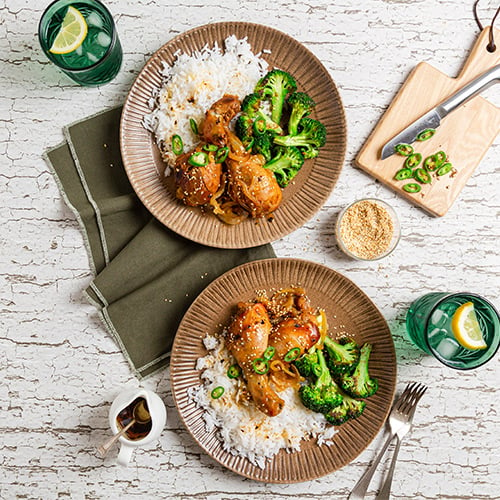

Honey Cake

Description
Succulent chicken drumsticks coated in a sweet and sticky orange marmalade sauce that just falls off the bone. This slow cooker meal is fuss-free, easy to prepare and delicious with freshly steamed rice and a side of sautéed broccoli.
Ingredients
- 1 cup orange marmalade
- 2 garlic cloves, minced
- 1 tsp minced ginger
- 2 tsp soy sauce
- 8 chicken drumsticks
- 1 onion, sliced
- 1 broccoli, cut into florets
- Toasted sesame seeds
Steps
- In a medium bowl whisk together the marmalade, garlic, ginger and soy sauce until well combined.
- Add the chicken drumsticks and onion to a slow cooker and pour over the marmalade mixture.
- Place the slow cooker on high for 3-4 hours or until the chicken is tender and cooked through.
- To cook the broccoli, bring a drizzle of olive oil to medium-high heat in a large skillet or frypan. Sauté the broccoli, stirring occasionally until tender and season to taste.
- Serve the marmalade chicken alongside the sautéd broccoli and garnish with the toasted sesame seeds.